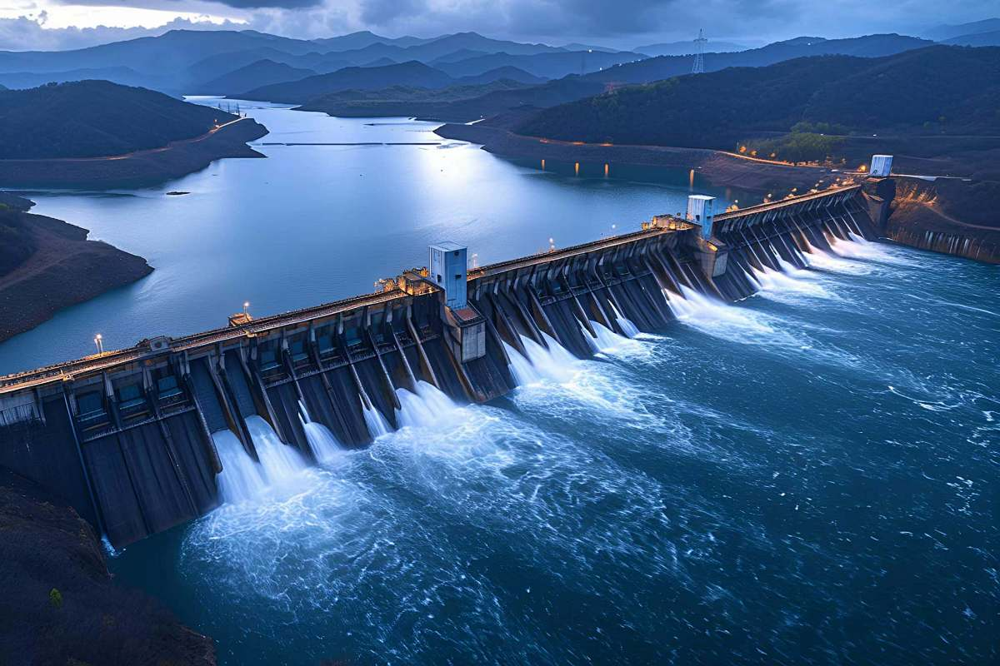

1999
Case Study
Three Gorges Project
First large-scale application of domestically manufactured hydraulic hoist equipment in a national strategic key project.
 Three Gorges Dam · Hubei, China
Three Gorges Dam · Hubei, China
First large-scale application of domestically manufactured hydraulic hoist equipment in a national strategic key project.
Three Gorges Dam · Hubei, China
In 1999, the Three Gorges Project — the world's largest hydropower facility and a national strategic key project of China — called upon our company as one of its critical equipment suppliers.
As a pioneer in China's hydraulic hoist industry, we were entrusted with supplying hydraulic hoists for the dam's flood discharge system, intake gates, and sand discharge outlets.
The Three Gorges Dam, spanning the Yangtze River in Hubei Province, was designed to harness the power of one of the world's greatest rivers for flood control, clean energy generation, and navigation improvement.

The scope of our involvement covered three critical systems of the dam — a testament to our manufacturing capability and engineering expertise.
| System | Quantity | Equipment |
|---|---|---|
| Flood Discharge Tunnels | 23 | QHSY Hydraulic Hoists |
| Intake Openings | 14 | QPKY Hydraulic Hoists |
| Sand Discharge Outlets | — | Hydraulic Hoists |
| Parameter | Intake Rapid Gates (QPKY) | Flood Discharge (QHSY) |
|---|---|---|
| Cylinder Bore | 710 mm | 650 mm |
| Stroke | 15 m | 11.29 m |
For the Three Gorges Project, we engineered and delivered two specialized hydraulic hoist systems, each purpose-built for its unique operating environment.
Designed for fast, reliable gate closure under extreme hydraulic pressure on both the left and right bank powerhouses.
Built to handle the rigorous operating conditions of high-flow water release through 23 flood discharge tunnels.

Project Video
Replace this placeholder with your video
The project was officially completed in June 2014 and successfully passed the final acceptance inspection.
Through independent third-party testing and verification, all products were confirmed to fully comply with national standards. The system has demonstrated stable operation and high processing efficiency, ensuring long-term compliance with all applicable regulatory requirements.
This achievement demonstrated that Chinese-made heavy engineering equipment could meet the most demanding specifications — paving the way for domestic suppliers to compete in projects of national and global significance.
